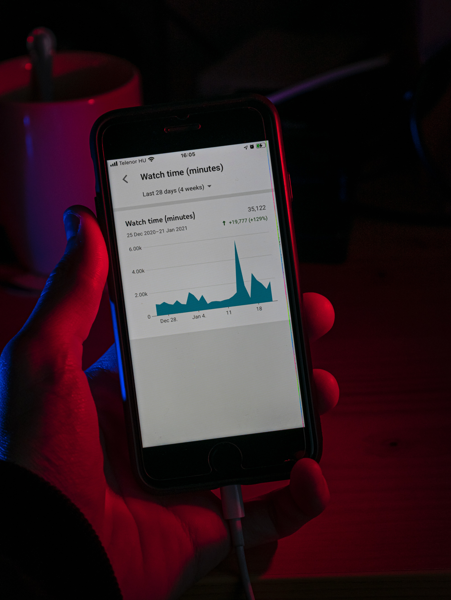

Data Analytics

Top Tech Companies Stock Price Analysis
- Description: Analyzed Apple, Google, Microsoft and Amazon stocks data.
- Skills: Data transforms, python coding, data visualization.
- Technology: Python, Pandas, Numpy, Seaborn, Matplotlib.
- Results: Closing price, volume of stocks being traded, daily price change, monthly & yearly average of closing price, correlation of closing price among the companies.
YouTube Sentiment Analysis
- Description: Analyzed text and detected positive and negative comments.
- Skills: Data transforms, python coding, data visualization.
- Technology: Python, Pandas, Numpy, Seaborn, Matplotlib, TextBlob, NLTK Vader, WordCloud.
- Results: New data frames of each TextBlob and NLTK Vader sentiment analysis, WordCloud of positive ad negative comments, and emojis analysis.

YouTube Trending Statistics
- Description: Analyzed Apple, Google, Microsoft and Amazon stocks data.
- Skills: Python coding, data visualization.
- Technology: Python, Pandas, Numpy, Seaborn, Matplotlib, Plotly.
- Results: Relationship between views and likes, visualization of trending videos.